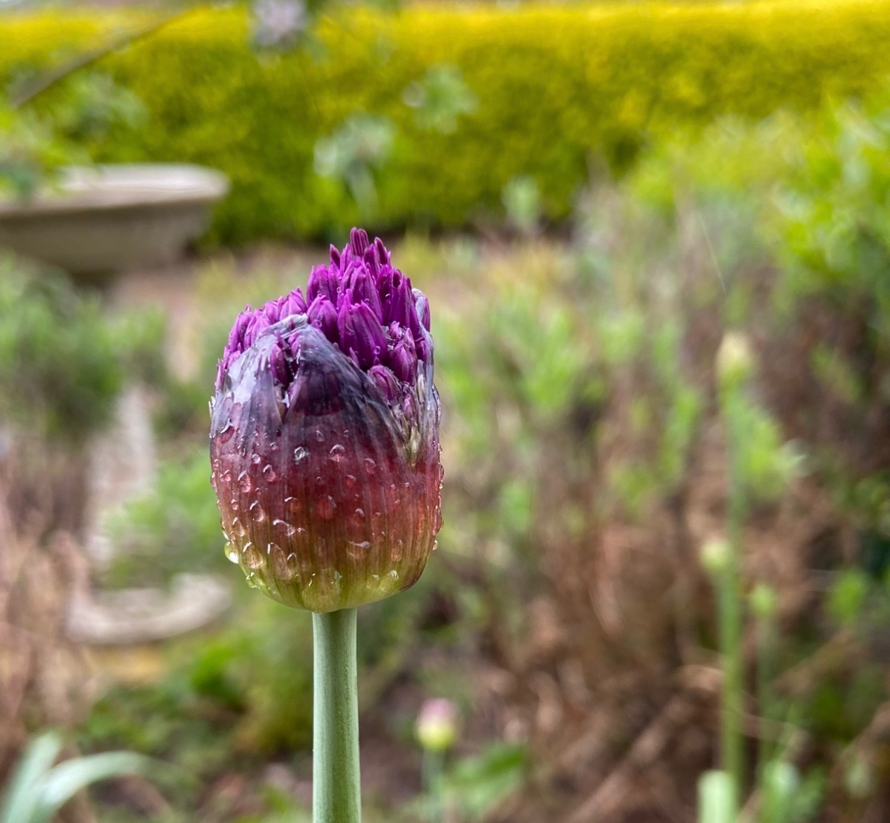
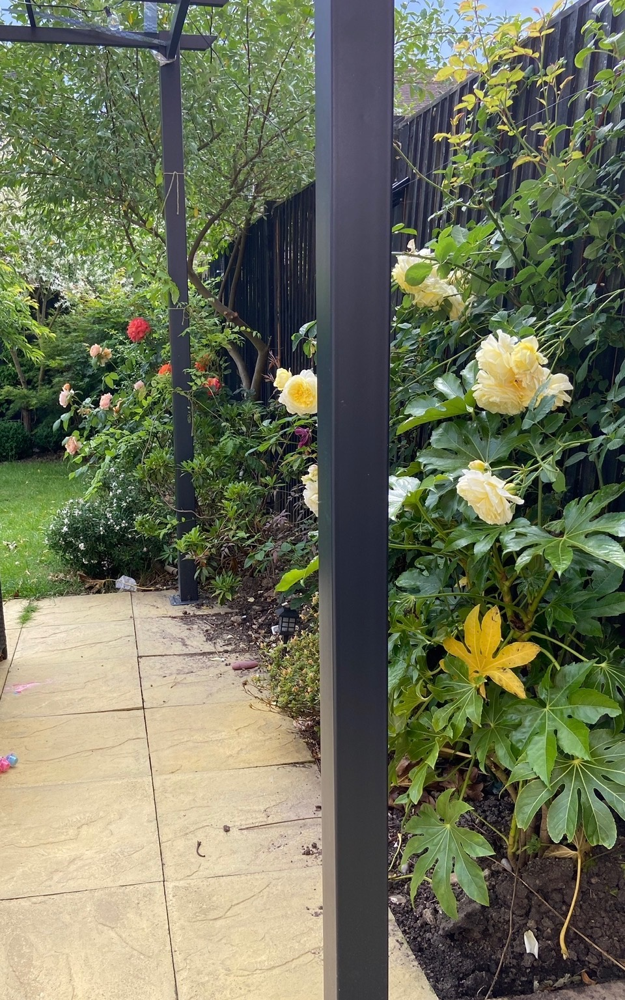
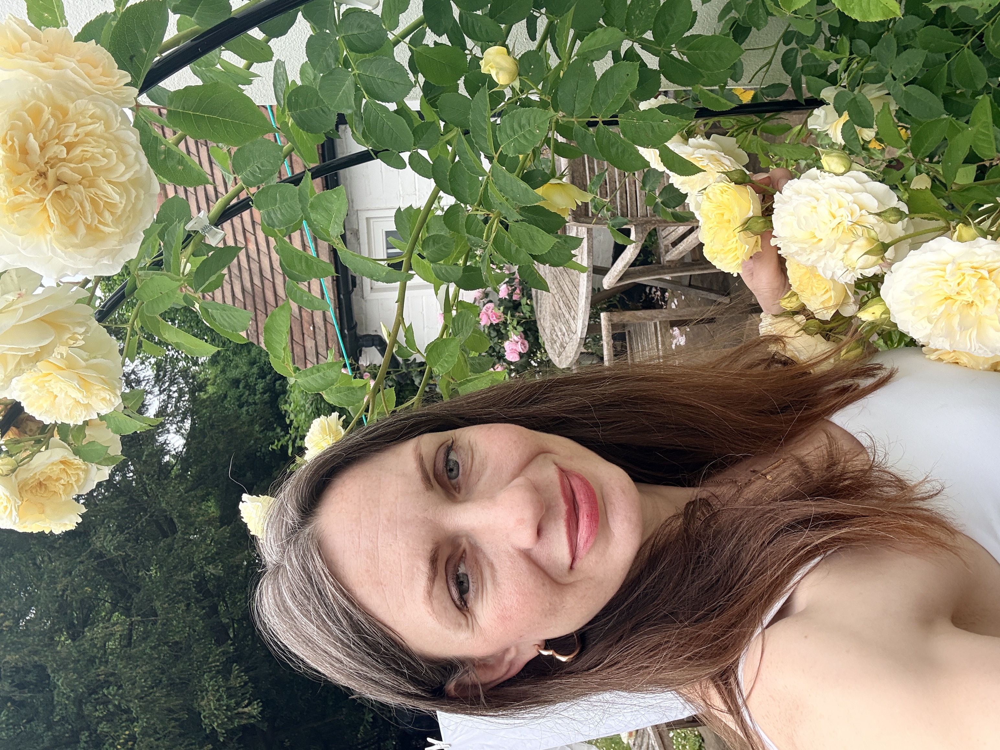
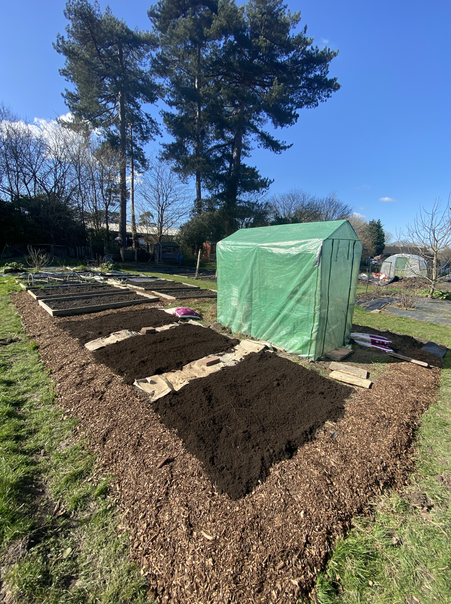

Personal practice / Horticulture
Gardens &
Horticulture.
Eleven years of hands-on garden design, cultivation and care across two residential gardens and a quarter allotment.
Gardening has been an enduring creative and practical part of my life. Alongside my professional career in design, I have planned, developed and personally maintained two gardens at my own homes, as well as managing a quarter allotment. I'm now exploring the opportunity to apply that commitment professionally in horticulture.
Garden one
One of two residential gardens that I designed, developed and maintained. A residential garden at Newick Way, including garden design and no-dig cultivation. These images document aspects of the garden and its development.




Hands-on involvement: garden planning, planting, digging, pruning and ongoing maintenance.
Photographs are from my personal gardening projects. Further project-specific chronology and before-and-after comparisons will be added as the archive is organised.
Garden two
My residential garden in Ashdown Forest, developed and maintained through hands-on work. The two videos below show different views of the garden, including its layout, established planting and climbing plants.

Hands-on involvement: garden design, planting, pruning and ongoing maintenance. Roses are a particular passion of mine, especially scented David Austin varieties and rambling and climbing roses. Over the years I have planted, trained, pruned and maintained many roses, considering their aspect, support structures and how they can be displayed alongside other flowers and climbers, including wisteria. I have also successfully transplanted 25 David Austin roses of varying ages between my residential gardens and different soil conditions.
Quarter allotment
I transformed and managed a quarter allotment using Charles Dowding’s no-dig method. I prepared growing beds, improved the layout, erected a greenhouse for seedlings and cultivated varieties of potatoes and radishes.




Methods and crops: no-dig cultivation, prepared growing beds, seedling propagation under cover, potatoes and radishes.
Next chapter
From personal passion
to professional practice.
I am seeking to build on this long-standing hands-on experience through work in a professional gardens and grounds team, bringing care, creative judgement, reliability and a willingness to learn.
← Return to my portfolio